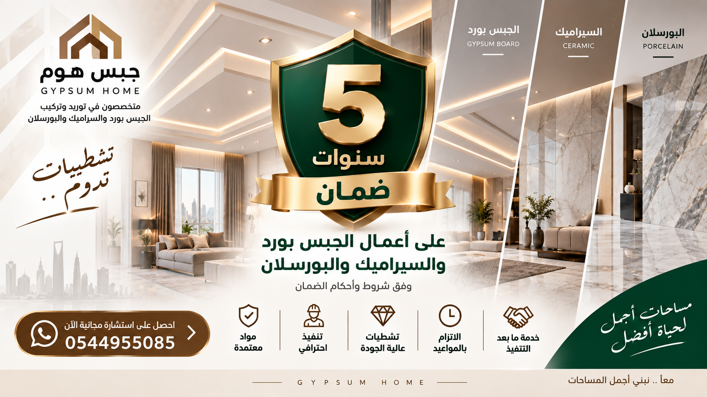
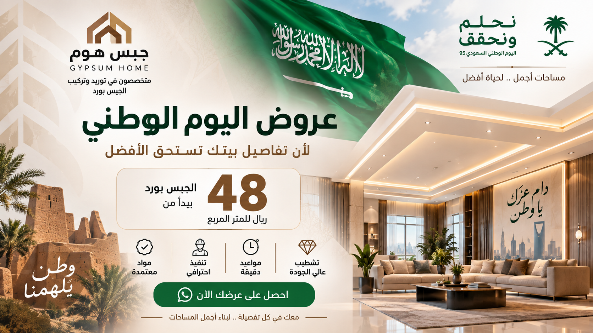
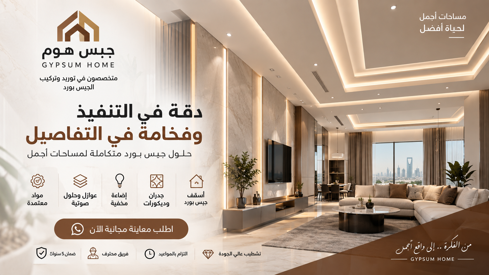

المطابخ
أسقف وتفاصيل داخلية
يمكن استخدام الأنظمة المناسبة في أجزاء من المطابخ وفق موقع التركيب ودرجة الرطوبة ومصدر المياه.
حلول جبس بورد للأسقف والجدران الداخلية في المواقع المناسبة للرطوبة، مع تحديد نوع اللوح والهيكل وطريقة التنفيذ حسب طبيعة المكان، والتمييز بين الجبس المقاوم للرطوبة والسمنت بورد عند الحاجة.

ألواح الجبس بورد المقاومة للرطوبة مصممة لتحمل ظروف رطوبة أعلى من ألواح الجبس العادية، ولذلك تستخدم في تطبيقات داخلية مناسبة وفق مواصفات اللوح والنظام المستخدم.
لكن اختيار اللوح لا يتم اعتمادًا على لون الغلاف فقط؛ بل يجب النظر إلى طبيعة المكان، مصدر الرطوبة، وجود مياه مباشرة، حالة العزل، والسطح الذي سيتم تنفيذ النظام عليه.
لكل مادة نطاق استخدام مختلف، والاختيار يعتمد على طبيعة المشروع ودرجة التعرض للرطوبة والمياه.
يستخدم في التطبيقات الداخلية الجافة التي لا تتطلب خصائص إضافية لمقاومة الرطوبة.
يستخدم في التطبيقات المناسبة التي تتطلب مقاومة أعلى للرطوبة مقارنة بالجبس العادي.
قد يكون الخيار الأنسب لبعض التطبيقات التي تتطلب نظامًا أكثر ملاءمة للرطوبة أو طبيعة الموقع.
عبارة «مقاوم للرطوبة» لا تعني أن الجبس بورد يمكن تركيبه في أي مكان معرض للمياه المباشرة دون دراسة أو عزل مناسب.
وجود تسرب مياه أو ضعف في العزل يجب التعامل معه أولًا، لأن اختيار لوح مقاوم للرطوبة لا يعالج مصدر التسرب نفسه.
يعتمد القرار النهائي على موضع اللوح وطبيعة الاستخدام ودرجة تعرضه للرطوبة.

يمكن استخدام الأنظمة المناسبة في أجزاء من المطابخ وفق موقع التركيب ودرجة الرطوبة ومصدر المياه.
اختيار اللوح المناسب للأسقف وفق ظروف الموقع والمواصفات المطلوبة.

حلول مختلفة حسب الغرفة وموقع الاستخدام.
اختيار نوع اللوح وفق طبيعة المساحة الداخلية.
بعض المواقع قد تتطلب اختيار نظام مختلف عن الجبس بورد.
النظام الكامل وطريقة التركيب لهما دور أساسي في النتيجة النهائية.
تركيب لوح جديد دون معالجة مصدر المياه لا يحل المشكلة الأساسية.
المواصفات الفنية ونطاق الاستخدام أهم من الاعتماد على لون الغلاف وحده.
جودة الحديد والتثبيت والمسافات جزء من نظام الجبس بورد.
معالجة الفواصل والتشطيب تؤثر على جودة السطح النهائي.
يمكن تنفيذ المشروع باستخدام أنواع مختلفة من ألواح الجبس بورد وفق المواصفات المطلوبة، ومنها ألواح مدى العادية والمقاومة للرطوبة والحريق والأنواع المركبة حسب احتياج المشروع.
كما يمكن تحديد السمنت بورد والسماكة المناسبة لبعض التطبيقات عندما تكون طبيعة الموقع تتطلب نظامًا مختلفًا.
تعرف على جبس بورد مدىأرسل صورة للموقع وحدد مكان التركيب ومصدر الرطوبة إن وجد والمساحة التقريبية.
معرفة مكان التركيب وطبيعة المساحة والاستخدام.
معرفة مصدر الرطوبة وهل يوجد تعرض مباشر للمياه.
تحديد اللوح والهيكل والمستلزمات المناسبة للمشروع.
تركيب ومعالجة الفواصل ومراجعة الأعمال قبل التسليم.
توفر جبس هوم ضمانًا لمدة 5 سنوات على أعمال التنفيذ وفق شروط الضمان ونطاق العمل المتفق عليه.
وفي أعمال الجبس بورد المقاوم للرطوبة، لا يشمل ضمان التنفيذ الأضرار الناتجة عن تسرب المياه أو ضعف العزل أو مصادر الرطوبة الخارجية أو عيوب المواد المصنعة أو التعديلات اللاحقة من أطراف أخرى.
الاطلاع على شروط الضمان ←هو نوع من ألواح الجبس بورد مصمم لتحمل ظروف رطوبة أعلى من الألواح العادية، ويستخدم في المواقع المناسبة وفق مواصفات اللوح وطبيعة المكان.
لا. مقاومة الرطوبة لا تعني أن اللوح مناسب للتعرض المباشر والمستمر للمياه. يجب دراسة الموقع والعزل وطبيعة التعرض للمياه واختيار النظام المناسب.
الجبس المقاوم للرطوبة يستخدم في تطبيقات داخلية مناسبة للرطوبة وفق مواصفات المنتج، بينما قد يكون السمنت بورد أنسب في التطبيقات التي تتطلب تحملاً أعلى للرطوبة أو حسب النظام والموقع.
يمكن استخدامه في التطبيقات المناسبة داخل المطابخ وفق موقع التركيب ودرجة التعرض للرطوبة ومواصفات النظام، مع ضرورة معالجة أي مصادر تسرب أو مياه مباشرة.
يمكن تنفيذ المشاريع باستخدام أنواع ومواصفات مختلفة من ألواح الجبس بورد، ومنها ألواح مدى وفق الاتفاق والمواصفات المطلوبة للمشروع.
توفر جبس هوم ضمانًا لمدة 5 سنوات على أعمال التنفيذ وفق شروط الضمان ونطاق العمل المتفق عليه، ولا يشمل ذلك الأضرار الناتجة عن تسرب المياه أو الأسباب الخارجية غير المرتبطة بالتنفيذ.
إذا كان لديك مشروع في الرياض وتحتاج إلى جبس بورد مقاوم للرطوبة أو تريد معرفة ما إذا كان الجبس بورد أو السمنت بورد هو الأنسب للموقع، أرسل لنا الصور ومكان الاستخدام والمساحة التقريبية.
تواصل مع جبس هوم